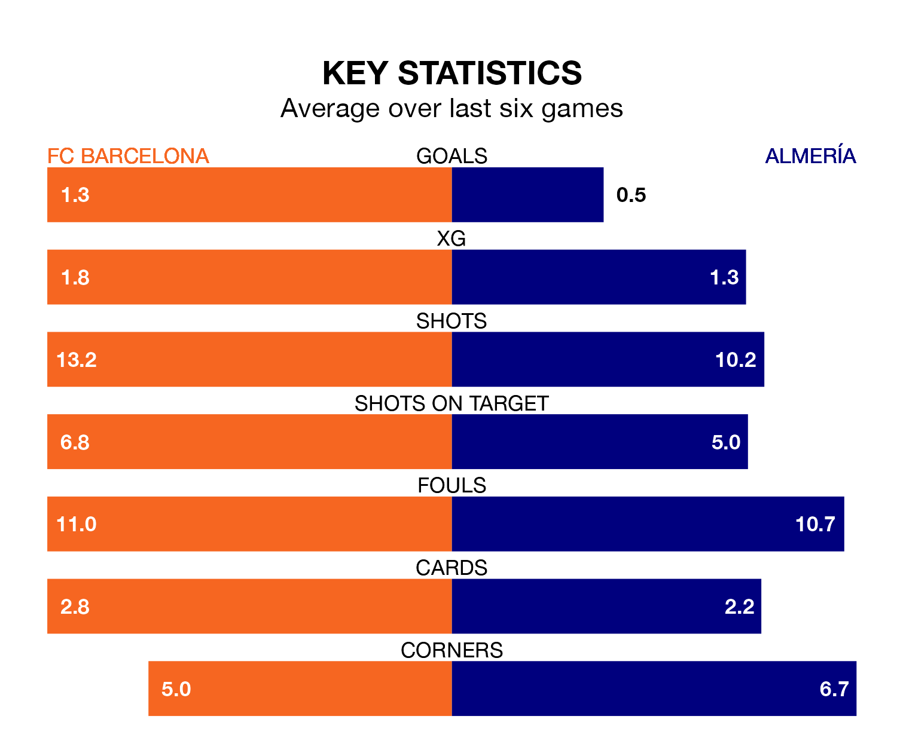

Mid-season relegation candidates Almería face a challenge away against high-flying FC Barcelona at Estadi Olímpic Lluís Companys on Wednesday.
Almería are rooted to the bottom of the La Liga table, and have picked up no wins and five draws in their 17 games to date.
FC Barcelona, meanwhile, are fourth in the standings with 35 points, having won 10 and drawn five, and are nine points behind table-toppers Girona FC.
Barcelona are in reasonable form in La Liga, with three wins and two draws from their last six games.
With no wins and two draws over that period, Almería's form is much worse – they have taken two points from 18, compared to Barça's 11.
With 31 goals in 17 games so far this season, FC Barcelona are scoring more than average in the league with 1.8 goals per game. And they are conceding fewer than average, letting in 19 goals at a rate of 1.1 per game.
The visitors, meanwhile, are below average scorers, with 1.0 goal per game, compared to a league average of 1.3. They have conceded 2.3 goals per game.
With Marc-André ter Stegen between the sticks, the home side can rely on one of the league's safest pair of hands. He has kept six clean sheets in his 13 appearances this season in La Liga.
In Almería's net, Luís Maximiano has two clean sheets in 14 games. He has conceded a goal every 48 minutes, twice as often as the 98 minutes between goals for ter Stegen.
Over the last two years, Barcelona and Almería have played each other twice. They won one each.
Their last meeting was on February 26, when Almería won 1-0 at home.
Barcelona's last match was on Saturday, a 1-1 draw against Valencia CF, with João Félix getting the goal for FC Barcelona.
Almería drew 0-0 with RCD Mallorca last time out, on Sunday.
Wednesday's match will be refereed by Guillermo Cuadra Fernández, who has taken charge of nine La Liga games so far this season, issuing four red cards and booking 46 players. He has awarded three penalties.
The last Almería game Cuadra Fernández refereed was the 5-1 loss away at Sevilla on September 26. He is yet to oversee a match featuring Barcelona this season.
Updated: 12:43, 20/12/23